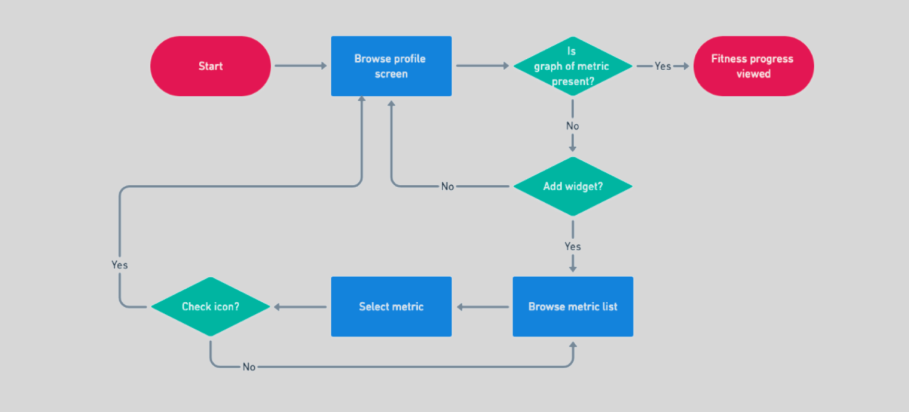
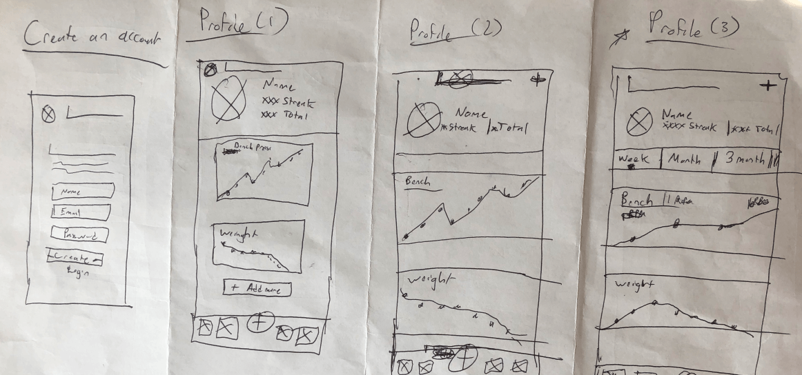
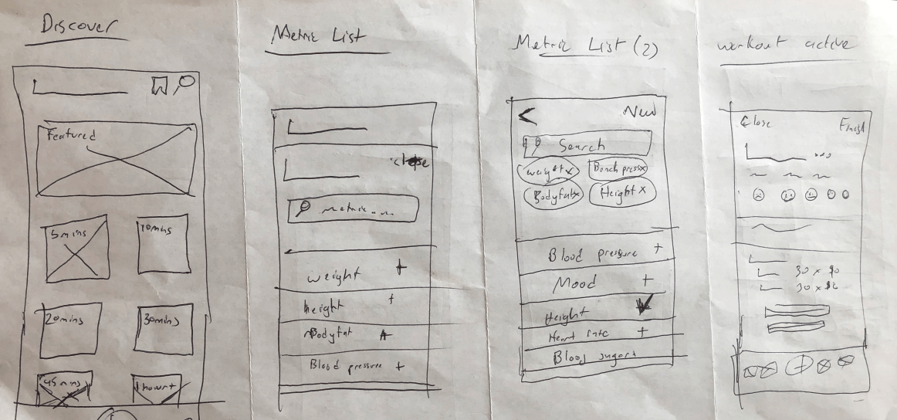
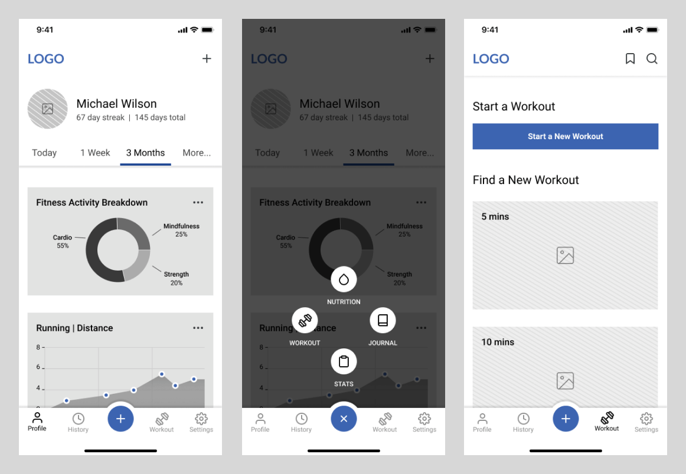
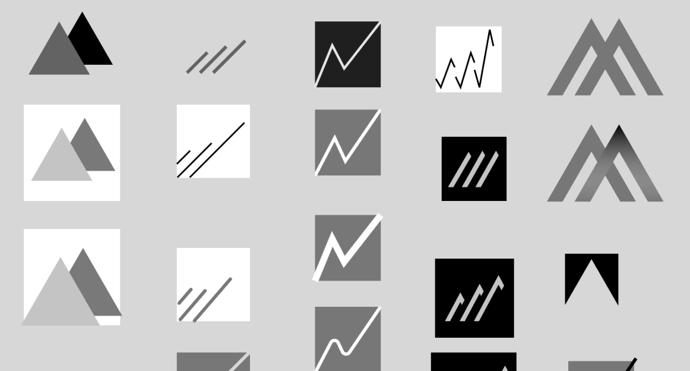

Movement Case Study
The Basics
Summary
Movement is a health and fitness tracker app committed to helping users reach their fitness goals. No matter how they may define them. The app gives users the ability to track their personal health and fitness progress, log custom workouts, and even discover new workouts.
What I did
- UX Research
- Information Architecture
- Branding & Identity Creation
- Visual Design
- Prototyping & Testing
Tools
- Google Surveys
- Google Docs
- Whimsical
- Maze
- Zoom
Duration
- 4 weeks
Deliverables
- User Survey
- Competitive Analysis
- User Interviews
- User Personas
- User Stories
- User Flows
- Sitemap
- Content Strategy
- Wireframes (low & high fidelity)
- Logo Design
- Style Guide
- Prototyping
- Usability Testing (moderated and unmoderated)
Problem
Exercise is important. We all know that. It improves health, boosts daily energy and enhances mood. While many people aim to increase their level of physical activity, not many of them are able to achieve their fitness goals. When I created Movement I wanted to help fix this. The problem I set out to solve was “How could we better help our users in achieving their fitness goals?”
Solution
The solution I came up with wasn’t what I thought it was going to be. Through the UX process I found out that users personal fitness and health was, well - personal. Everyone defined their goals in a different way. Everyone had different types of workout routines. This concept became the emphasis for Movement.
Movement’s features revolved around not only tracking the user’s progress and workouts, but also allowing users to control what and how these things were tracked.
I found that the key features needed to create a minimal viable product were making an account, logging into an existing account, creating a progress graph, logging a workout and finding a workout.
Discovery and Research
User Survey
Using Google surveys, I created a survey centered around personal fitness and fitness tracker apps. I wanted to get insight into what our potential users' motivations and frustrations were. I found out that…
Non physically active users
Listed time constraints as a barrier to not exercising
Listed lack of knowledge as a barrier to not exercising
Physically active users
Listed health as their primary motivation
Currently are using fitness tracker apps
I also found out that from the users currently using personal fitness trackers apps, they mainly used them to log a workout, keep track of body metrics, and analyze fitness progress.
In addition, when physically active users were asked what features they would most like to see in a fitness tracker app, workout suggestions and deeper progression metrics were the top two features users wanted.
Before deploying the survey I believed that progression, social sharing/community, and digital award/accomplishment features would help motivate users. But from the research it looked like Users didn’t seem to care about awards and community. They were more engrossed with their own journey. They only seem to care about their own progress.
Competitive Analysis
Using Google Docs, I did a competitive analysis on 3 major fitness applications.

Strong
Strengths
- Great at logging in workouts
- Flexible. Can create custom weightlifting exercises and programs
Weaknesses
- Very numbers centric
- Limited. Doesn’t cater to all workouts
5x5 Stronglifts
Strengths
- Great at tracking workout progression
- Exceptional at guiding users through workouts
Weaknesses
- Can’t create personal workouts
- Only tracks lifts and weight. Not health metrics (ex. bicep size, blood sugar, heart rate)
Strava
Strengths
- Clean, sleek UI
- Amazing analytics. Users can track their run and progress in a multitude of ways
Weaknesses
- Limited functionality when tracking anything other than running and cycling
One of the most challenging parts was dealing with gated features. Without a budget I couldn’t fully experience what all these applications had to offer. In addition, with the time constraints, I couldn’t see how their progress and tracking features worked after months of use. I had to rely heavily on reviews and photos to get a full picture.
UX Interviews
In order to get a deeper look into the thought process of our potential users, I reached out to 3 survey participants to conduct UX interviews.
I came up with a list of potential questions to ask them surrounding their experience with personal fitness and tracker apps. The interviews lasted around 20-30 minutes. In these interviews I found out that....
- They all participated in different fitness activities. Some like to run, one likes to walk and do yoga while the other likes to do pilates. It all varied.
- It wasn’t necessarily the personal records or the image in the mirror, but the feeling that they got that really mattered to them.
- Participants stated that they never used, or that they stopped using fitness tracker apps because they didn’t cater to their type of goals and workouts.
The most challenging part of this deliverable was staying neutral and trying not to lead the participant in any direction. This was especially important when the interviews didn’t go where I expected them to.
I found that the more prepared I was the better the interviews went. That meant that I had a different list of questions to ask based on the answers that were given.
Another thing I discovered was that the interviews that went the best were the ones that weren’t forced. I gained the most insight when I focused on listening and reacting to the interviewee’s answers rather than trying to cram all my questions in.
User Personas
In an effort to combine all the research I did and humanize our potential users, I made user personas.

Audrey Santos
- Age: 26
- Occupation: Online Marketer
- Location: California, USA
- Gender: Female
- Status: Single
- Role: Goal Oriented Fitness Enthusiast
Goals
- Track workouts
- Analyze progress
- Set fitness goals
Frustrations
- Can’t see a breakdown of her fitness activity
- Can only track basic metrics like pace and speed
- Can’t look at the details of a specific point on a graph

Michael Wilson
- Age: 22
- Occupation: Student
- Location: New York, USA
- Gender: Male
- Status: Single
- Role: Holistic Practitioner
Goals
- Record physical activity
- Create a workout note
- Record nutrition
Frustrations
- Doesn’t support all fitness activities
- Too numbers driven. Can’t track things like mood, happiness level and difficulty of workout
- Takes too long to input

Amy Davis
- Age: 35
- Occupation: Teacher
- Location: Florida, USA
- Gender: Female
- Status: Married
- Role: Busy Beginner
Goals
- Discover workouts
- Track body measurements
- Track weight
Frustrations
- Suggested workouts are limited
- Suggested workouts are often too long, too tiring and too confusing
- Too much of an emphasis on losing weight and not enough on gaining
All the information in these user personas were taken from the data that was collected. That includes the demographic information.
Something to note with these user personas are that these are the 2nd versions. In the original version there was a heavy emphasis on weightlifting, hitting numbers and gaining muscle. It wasn’t until I started my user stories that I realized that my personal biases had influenced my personas.
When I think of fitness I think of lifting weights, hitting personal records, looking good. I don’t really care about how painful the experience is. I could cry, scream and complain, I could hate every second of it. I could be in pain for days, but as long as I hit my goals that’s all that mattered.
I didn’t anticipate that not everyone would share this viewpoint. Participants seem to put a lot more emphasis on the feeling of the workout rather than the results. I also didn’t realize that users would take part in many different types of fitness activities. Not just lifting weights. So I had to go back and edit the user personas to match the data collected rather than my own personal biases.
Information Architecture
User Stories
I created my user stories with the same 3 roles as my user personas - busy beginner, holistic practitioner and fitness enthusiast. While each persona had different levels of prioritization for each task, I found that when I took all their needs into account our users wanted to…
- Create an account
- Log into an existing account
- Track their progress
- Input fitness activities
- Discover a workout
These became the MVPs of the project.
The challenge I ran into was at the midpoint of this deliverable. It was what I mentioned in the user personas section. I started to realize that my user stories weren’t matching up with my user personas. I began to have doubts about my work. I was confused. I reflected on the user data and I realized that my own biases were bleeding into the work. So I updated my user personas to more closely align to the data I’ve collected.
User Flows
When creating the user flows for this project I began with sketching. This was a way to get the ideas out quick.
After various amounts of sketching I had a good grasp on how I wanted the user experience to be. I looked for the flows that best represented what I had in my mind. I then transferred these to a digital platform - Whimsical.
With the user flows I wanted to try to make the process as quick and intuitive as possible. For example, if you take Movement’s view fitness progress user flow, it can be done in as little as two steps.
Sitemap
I distilled my user flows into a sitemap. This helped me understand how big the project needed to be. By doing this I ensured I wouldn’t waste any time, money and effort making unnecessary pages/features. In addition, it helped me quickly create a testable product.
Sketching
 I did 2 rounds of sketching.
During the 1st round I refrained from looking for inspiration. This is the stage of the project I feel the most creative. So I wanted to see what my mind came up with before being influenced. Using the crazy 8 method I was able to quickly dump all my ideas out on the page, no matter how ridiculous.
I then compared and analyzed my previous sketches with inspiration that I found from my competitors and other designs from the web. This brought forth the wave of ideas that informed the 2nd round of sketching.
Wireframes
By the time I was ready to start my wireframes I had multiple sketches. I combed through the sketches and selected the ones that visually highlighted the user flows the best.
Using Figma, I transferred those sketches to the digital.
The challenging part about this section was that not everything worked the way I thought. When the content was added and the lines were drawn it didn’t always look as good. When this happened I had to examine the problem. Was it just a certain section or did the whole page not work? If it was just a section, I would experiment on figma and try to solve it there. If it was the whole page, I would look for more inspiration and resketch it.
Branding
Finding an Identity
During the UX process I started to develop a feeling of what this project should be. However I couldn’t express it.
I created a moodboard to visually see what my feelings were. This process helped me contextualize what I felt and put it into words.
This app was going to be cool, sleek, luxurious, mixed in with a bit of grit and passion.
Making a Name
To come up with a name I started with the mind mapping technique. I wrote every word down that I thought related to fitness. From there, I selected the words that brought me closer to the brand I had envisioned.
With the selected words I looked at their synonyms. I also looked up what the words are in different languages.
Eventually I landed on the name - Movement.
Along with sounding sleek and luxurious, the name Movement was chosen because of its multi layer application to the brand. By definition, the word movement is the act of changing physical location or position or of having this be changed. But movement doesn’t just apply to the physical. Movement can also just be a change or a development in general.
That cover’s both aspects of what the application promotes - physical movement and movement towards one’s goals.
Logo Creation
I created the logo similar to how I created the wireframes. I started by doing various amounts of sketching. When I found a few that started to represent Movement’s brand, I brought them to a design software - Figma.
This was the hardest part. The logos that I felt best about didn’t always translate well. To combat this I had to look at what parts of the logo drew me to it in the first place. I would iterate with these parts in mind. It almost felt like I was a sculptor hammering away at a piece of marble.
Slowly the logo started to reveal itself.
The logo represents many different aspects of the brand. Alongside looking active and vibrant, it also looked like a graph. This highlights one of Movement’s core services - the ability to look at their fitness and health progression. On top of that, the logo also looks like a heartbeat which represents health and fitness. Lastly, the lines form an M for Movement.
Style Guide
I created a style guide to showcase the various different elements of Movement.
Color palette

I chose red as the main brand color because it represented passion and energy. But it also looked more active compared to other colors.
Typography
I chose Aileron as the font style because it looks sleek and smooth. The san-serif also gives it a modern look. In addition, the various weights give it a great level of flexibility.
Visual Design
First Iteration
After creating Movement’s brand, I aimed to combine it’s new found visual identity with the wireframes I created. Through the process I had to make a few changes.
Change #1
When I started to add the various visual elements to the welcome screen, the product started to look cheap. To combat this I made the images full width. I also shrunk the heading and placed the copy below the image. I also added more descriptive text to describe what the application was.
Another change I did was I replaced the buttons with links. This created more space. While also helping the project look more luxurious.
Change #2
I removed the filter option on the suggested workout page. Originally I thought this was an important feature to have. But after some reflection I realized that while nice to have, it wasn’t necessary. A filter option is a huge undertaking and by creating it, it would take away time from the MVPs of the project.
Another change I made on this page was increasing the size of the workout selections. This allowed for more room to add descriptive copy. I added this so users wouldn’t constantly select a workout only to realize that it didn’t cater to their needs.
Change #3
I added a pop up cancel screen. This way users wouldn’t accidentally leave the workout screen or the metric/exercise selection screens before saving their edits/progress.
Second Iteration
Usability Test #1
After creating my first iteration of the high-fi mockups, the project was ready to be tested. The results of these tests informed my design decisions of the 2nd iteration.
I created an unmoderated usability test using Maze. The challenging part of this section was that I wasn’t going to be there. So I had to word the task in such a way where it would be clear but it wouldn’t lead the user. I created several drafts and selected the one that I felt did that. The 5 task I gave users were....
- Create an account
- Log into an existing account
- Create a graph that tracked their weight progress
- Create a custom workout with the exercise "running"
- Discover a 15 minute, intermediate ab workout
Discovery and change #1
I found that when users were attempting to create a graph, a majority of them clicked the plus menu. This would lead them to get lost because there isn’t an option to create a graph on this menu. I didn’t anticipate that users would select the plus menu to complete this task.
To attempt to solve this problem I added an icon named “progress”.
Discovery and change #2
When users were creating a graph to follow I found that they were not going through the user flow I intended. After selecting a metric users rarely tapped on the right place. Many users would attempt to select the create new metric button or the blobs instead of the check mark icon on the top right.
The problem was that the create new metric button gave the user the ability to create their very own custom metric. While the blobs represented the metrics that were already being followed. None of these saved the graph that the user attempted to create.
To alleviate this problem I changed the copy from “create new metric” to “create custom metric.”
I also removed the check mark icon and added a persistent button with the copy “save changes”. I also gave this button a fill. This was my attempt to make this button stand out more.
In addition I gave the blobs a subtitle to explain what they were. But in order to create room for this subtitle I had to remove the search bar and change it to an icon on the top right.
Discovery and change #3
Users found the copy on the select method screen confusing. They didn’t know what each option meant.
To try to solve this I removed the option “track” and I placed it in the plus menu (I renamed it GPS).
With the remaining two selections, I added more context to give the users a better idea of what the options did.
Discovery and change #4
When users attempted to create a workout or start a workout they often got confused when landing on the active workout page.
In the 1st iteration users would land on the notes tab. But this led some users to exit, thinking that they were in the wrong place. In an attempt to correct this I had users land on the workout tab instead of the notes tab.
Third Iteration
Usability Test #2
After creating the 2nd iteration of my high fi mockups I was ready to go into another round of usability testing. However, this time I did one in person and one remote test. I did the remote test over zoom.
I gave these participants the same 5 tasks as I gave the unmoderated participants.
While tasks like creating a new account and logging into an existing account went well during the maze test I wanted to see them live. I felt like it would give me more detail not only on the process but the initial look and feel users get when first opening the application.
Discovery and change #1
During the usability test, I was given feedback about diversity in regards to the welcome page image. This made me reflect back to the demographic of the application. I looked through the user survey and found that while 72.4% were still caucasion, there was a slight majority of participants who were female. So I changed my welcome image to reflect that.
Discovery and change #2
I found that I had to make further changes to the select metric screen.
When a user landed on the select metric screen, I found that they were questioning if they were on the right page. It was a combination of not being able to see the tabs and not understanding the word “metric.”
I added a divide between the tabs and the top section in hopes to show a distinction between the two areas.
I also changed the word “metric” to “graph”. In order to lead to less confusion, I did this throughout the application.
Discovery and change #3
I found that I had to make further changes to the select metric screen.
In the 2nd iteration a user would create a graph by pressing the plus icon near the metric. This would highlight the metric. Then the user would select the plus icon and press save changes to create the graph.
However, the problem was that the metric would also highlight when the user would tap on the name. This would cause users to think that the metric was selected when it was not.
To try to solve this I changed it so that the metric was only highlighted when the metric was selected. Not when it was just tapped on.
Another problem was that users were still selecting the “create custom metric” button in an attempt to create a graph. This led me to get rid of the “create custom metric” button and place it as a link on the top right. By doing this it gave the “save changes” button an even higher priority.
Reflection
Closing thoughts
My assumptions
Going into this project I assumed that everyone's definition of personal fitness was the same as mine. I thought that everyone wanted to lift weights, look good and push themselves to the max.
However, through the UX process I discovered that wasn’t the case. Everyone’s personal fitness, goals and motivations were different. I needed to create an application that catered to that.
What surprised me
What surprised me was how easy it was for personal biases to slip into your work. I learned that it’s extremely important to constantly refer back to the research and the data to check if the decisions you are making are based on the data or based on your own personal opinion.
Another thing that surprised me was how important the order of buttons was in design.
In the create a graph/metric screen, I thought by giving the save changes button a fill and giving the “create custom metric” button to a new copy it would create a clear distinction. However, it was as if users instinctually clicked the first button on the way down.
If I had more time...
If given more time I would have loved to perform a card sorting session. I feel as if it would better help organize the information in this app better. I also feel as if there could have been better tab names than “exercise”, “health” and “body parts”. A card sorting exercise could have helped with that.
Another thing I would have done is run another round of in person usability tests. But this time I would have liked to test 5 different users. This would not only help verify the solutions I made but it would bring more credibility to the project. Five users is a decent enough data size to give a designer reassurance about their design decisions. Unfortunately my 2nd usability test didn’t have this.
In addition, I would have also loved to design, prototype and test out some other features. For example, I think adding a stat (ex. Weight, bicep measurement, blood sugar) is a very important task that we didn’t get to prototyped and tested out.
Lastly, I would have loved to try to redesign the project in a way where the users wouldn’t have to log in or sign up unless absolutely necessary. This means that users could create workouts, exercises and discover new workouts without an account. It’s only when a user wants to start tracking their progress or bookmarking a workout when they will need to sign up for an account. It would have been interesting to see how this would have tested.
What I learned
The project has given me a new appreciation for app design.
It has also really enforced the idea about how important testing is. When designing my projects I was so sure that the user experience was going to be seamless. But the testing showed how wrong I really was.
Through the testing I was able to get a better idea of how users interacted with the product. This has increased my confidence on how well the product can solve our initial problem - how do we better help our users achieve their fitness goals?